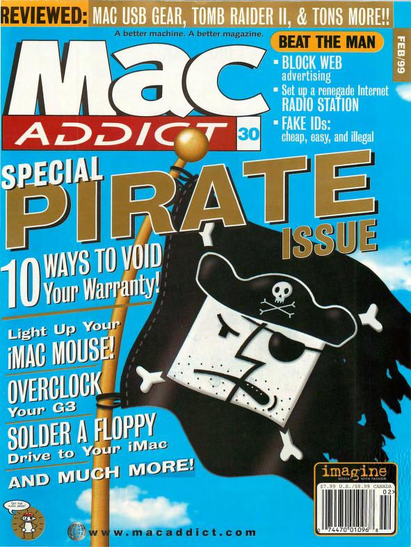

Why podcasts won
How RSS made pirate radio a reality
Not to brag too hard, but I did a "podcast" before the term was invented. It was called "Skippy Republic Radio," it was published in 2001-ish, and it was me and my best friend Geoff breaking down the important anime and video game news of the week.
I don't remember how we found microphones, or what audio interface we used, or what exact anime we talked about, but I do remember cringing when I listened to my voice, and especially my constant use of the filler-phrase "it will be interesting to see..." to punt the focus to an unknown future in the frequent instances I didn't have any information or opinion to add.
Little did I know I was "early" to a medium that 23 years later would be widely credited with a widespread political reorientation of the country and the election of a president.
I got the idea from my favorite magazine at the time, MacAddict, in its February '99 "Pirate Issue."

"Set up a renegade Internet RADIO STATION," the headline promised!
And so I did. Publishing your own "radio show" on the internet felt subversive because I lived in an era where the only forms of public broadcast were on government-regulated radio airwaves, or corporate-owned cable channels, or government-owned "public access." Or you had to publish a book, or... I don't know... mail people VHS tapes?
Broadcasting your own show without anyone's permission was closely associated with illegality because the most well-known instances of it, pirate radio, were literally people breaking the law to broadcast on government-restricted radio spectrum.
My buddy Geoff and I, in addition to loving anime, Pokémon, and video games, idolized Weird Al Yankovich, whose film UHF had a total pirate radio vibe to it. It was based on this crazy premise that a well-meaning weirdo might accidentally end up with the legal right to broadcast entertainment he thought was cool.
In the decades since, most "UHF" spectrum (ultra-high frequency) has been auctioned off by the government for use in DTV (digital TV) and modern cellphone networks. It's quite likely that in the alternate universe of UHF, a 2024 Weird Al would no longer own the rights to broadcast weird television programs to his friends.
But he might have a podcast.
Of course, the real etymology of the term "podcast" comes from the "iPod". Back when we called it "internet radio," it was just nerds on computers listening to shows. My Skippy Republic Radio show had perhaps four listeners all-time. Portable MP3 players, a technology which the iPod brought to the mainstream in the early 2000s, meant you could now listen to an "internet radio show" in all the same places you listened to regular radio: on a commute, at the gym, while doing chores.
But the other fundamental technological "breakthrough" that led to the podcast's enduring and world-shifting success was RSS.
I think RSS is well-known and well-loved already in technology circles. But I feel like it's completely under-appreciated by the normie public, so I want to try and break down how impactful it is.
RSS stands for "Really Simple Syndication," and it's simply a standard for publishing a "feed" of items. The original application was blog posts. Instead of you having to come to my website every day to check if I've published a new blog post, you could "subscribe" to my RSS "feed" and my new blog posts would be delivered to your "feed reader" next to all the other blogs you subscribe to.
Podcasts can travel over this same medium. Instead of text "blog posts" you publish audio podcast "episodes" and your "podcast app" shows you all the new episodes as they're published.
The technology is so "Really" simple that its impact isn't immediately obvious. Let me give a case study to help demonstrate this.
The first tech publication I worked for was Engadget. I began as a super-fan of the "website," and when I say "website" I actually mean the RSS feed of blog posts. Engadget was, during prime hours, this constant feed of new posts about tech every 20-30 minutes. It would feel odd to check back on a website so often "just in case" something new hit the home page. But having an RSS reader app on my computer meant the posts just came to me, hot off the presses.
When Engadget launched a podcast, starring its founders Peter Rojas and Ryan Block, I ate it up. I don't even remember what device I was using at the time to listen, but I know I never missed an episode. Hanging with the boys? Talking about megapixels and gigahertz and QWERTY phone keyboards? Pump it straight into my veins.
The first episode of the Engadget Podcast was in 2004, and interestingly the announcement post (which pinged into my RSS reader alongside the regular feed of news about iterative digital camera upgrades and new laptops), includes an in-depth guide on what a podcast is, how to subscribe to a podcast, and even how the Engadget Podcast itself was produced.
I guess it felt obvious at the time that podcasting was a "technology," and so while the podcast was about technology, it was also introduced to the Engadget audience as a technology.
But here's where it gets more interesting for today's purposes: Peter Rojas and Ryan Block in turn eventually left Engadget. And I was slowly introduced onto the show as a co-host. And I eventually co-hosted the show with the next editors of Engadget. And when we left Engadget? The show was continued by our own replacements.
RSS is "sticky" like that. People who subscribed for Peter and Ryan might barely be able to tolerate my "it will be interesting to see..." hot takes about the Blackberry Storm, but these dang episodes keep showing up in their feed (unless they go through the trouble of unsubscribing), and in many cases me and replacement co-hosts won that war of attrition.
Podcasts are sticky in another way. When my co-hosts and I left Engadget to start a new publication, we didn't even have a name for that publication yet. But we started a podcast. We called it "This Is My Next," and we launched it immediately (and costlessly, RSS is simple remember?) after leaving Engadget so that our audience could quickly follow us before they built new podcasting habits.
So RSS is both "sticky" for a publisher to maintain an audience, and "cheap" for an upstart to spin up and attract a new or existing audience.
This is a wild combination in the history of media.
A The New York Times subscription is "sticky." The newsletter I make 20 copies of on the office copy machine is "cheap." Watching 60 Minutes after Sunday night football is "sticky." Bullshitting with your friends around a dinner table is "cheap."
Somehow, magically, podcasts combined both properties.
Okay, fun history lesson, but what do these "RSS" feeds have to do with modern podcasting? Most people watch their "podcasts" on YouTube, which is a proprietary platform. The Joe Rogan Experience, the world's biggest and most influential podcast, launched originally as a video show, and is published on Spotify, another proprietary platform.
So didn't RSS lose in the long run? Was it "RSS" that unseated CNN and Fox News for political primacy? Or was it actually Spotify and YouTube? Big tech won. Not the little guy, right?
I'm biased, but I would argue that RSS still deserves some credit for this victory. And either way, the little guy is doing even better than he seems. Big tech can win in the short term, but simple, useful protocols like RSS are hard to kill.
In 2020, Joe Rogan's podcast went exclusive on Spotify, in exchange for over $200 million. Spotify basically paid Joe Rogan that money to not use RSS. Spotify could grow its platform by getting such a popular and sticky host. And now, in 2024, Joe Rogan is no longer exclusive, publishes full episodes to his RSS feed (which never totally went away), and Spotify paid him $250 million for this now non-exclusive setup.
Spotify could rely on the stickiness of Joe Rogan to bring people to their inconvenient and arbitrarily constrained platform in order to gain users. And Joe Rogan, once the deal was up, was able to cheaply and quickly spin up the sort of multi-platform (RSS-included) distribution his fans preferred.
Spotify paid big money to break into the podcast game, and now that they're a popular podcast platform, they don't seem to mind so much some randoms like me subscribing to "their" shows with alternative RSS-based podcast apps. RSS wins.
RSS doesn't have to be ubiquitous or even well-known to be powerful. It's an implicit threat. During the censorship bonanza of 2015-2023ish, shows whose medium was highly specific to a certain platform and algorithm were in constant danger of being shut down and booted to irrelevancy. But podcasts always had RSS as a backstop.
In an era dominated by platforms like YouTube, Facebook, and Twitter, RSS was the rare instance of "self-hosted" media. It was easy to get interesting and controversial shows banned by the willing stooges at big tech. But RSS-based podcasts were so diffuse, self-published, and hydra-esque that a broad direct banning campaign of RSS feeds themselves has never even been tried.
Even if you got a show booted off Apple's industry-leading podcast directory, which happened famously with Alex Jones, that still wouldn't end a podcast. The directory is huge for a podcast's discoverability and growth, but an RSS feed is a direct relationship between the user and the publisher, no platform permission required.
My favorite podcast during the lockdowns, Dave Smith's Part Of The Problem had its community Facebook group deplatformed. The show was constantly in danger of "strikes" or a looming ban from YouTube (which led to admitted self-censorship at the time, RSS hasn't fixed everything). And yet I enjoyed every single episode of the show completely unbothered on my humble RSS-based podcast app.
I don't even know if POTP's RSS-based distribution outdid YouTube or Spotify in raw numbers. It's the fact that RSS was always there as a backstop that made the threat of censorship on those other platforms less effectual. Direct RSS distribution is the highly credible escape route that ruins the enemy's plan before it's even executed.
In the case of the attempted cancellation of Joe Rogan in 2022, I have no detailed knowledge of the situation, but part of me strongly believes that Joe Rogan survived because of the backstop of RSS. He had brought an immense audience with him to Spotify. And RSS exists. So he could weather the storm, safe in the knowledge that he can bring his audience with him to his own RSS feed the instant Spotify blinks.
"I could self-publish this shit, I've done it before," is the plausible escape route. RSS-lovers like me bemoaned Joe's move to Spotify. You could argue it's actually limited his reach. He might be an even bigger deal in 2024 if he had stayed platform agnostic. And yet, even though Joe left RSS, RSS never stopped working as a credible backstop and defense against the woke mob.
And every single podcast with a committed audience is in that same position.
Podcasters are for sure playing with fire when they overly rely on algorithmic distribution like YouTube or TikTok. They might enjoy broader reach while they're in favor, but if they never achieve the "stickiness" of a real podcast subscription, their star will likely fade.
Once again, RSS is the winning move, the safe harbor for the creator.
And what's even better, podcasts are not just anti-fragile, sticky, easy to start, and easy to distribute, they're also really good.
Dave Smith had a great point on this (on his podcast, naturally): there are certain dumb ideas, such as "transing the kids," that could only survive in a TV-dominated, short sound byte era. Transing the kids is a no-go when you have three hours to explain why it's a bad idea. Some idea parasites can no longer find a viable host, and good riddance.
I remember at some point between the years between 2010 and 2020 I discovered that podcasts were a particularly "male" medium. I'm embarrassed now to say that I was embarrassed then to be so enraptured with a medium that was largely unappealing to the fairer sex. In hindsight, I'm so grateful for the masculine urge to listen to podcasts, and the masculine urge to start a podcast.
Perhaps there's something quintessentially "male" about wanting a self-directed media diet, long form discussions, topical and historical deep dives, and bros clowning on bros. If so, the media landscape has been offering starvation portions to men for most of the 20th century. And now, "all of a sudden" (after two decades of steady growth), podcasts have been declared the most important medium, at least in the realm of the political conversation.
If you asked me to delete media formats one by one, starting with what's least precious to me, I would delete all of TV, and then movies, and even music, before I got rid of podcasts. Only books, and the truest signal of actually having a real conversation with your bros, come to mind as more valuable than me.
Podcasts are good. Podcasts won. RSS won.
Long live pirate radio.